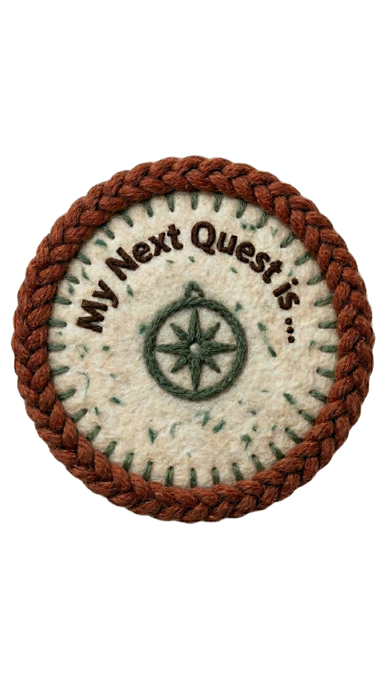
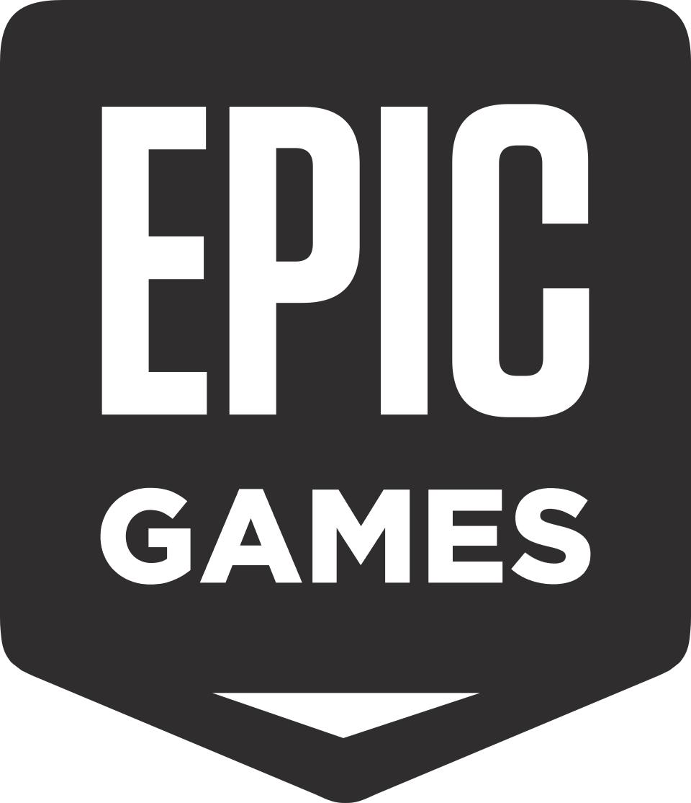
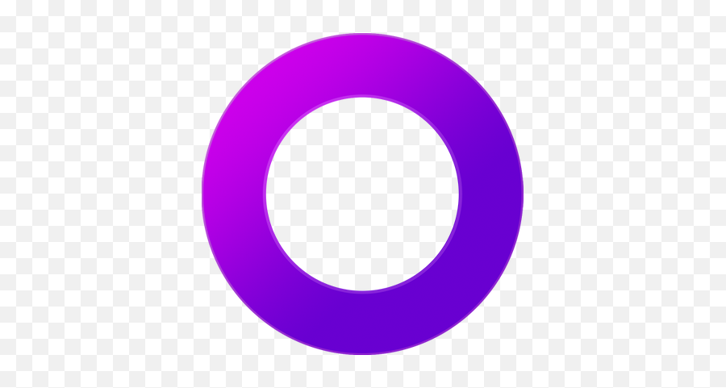
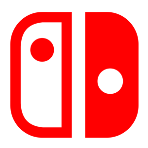
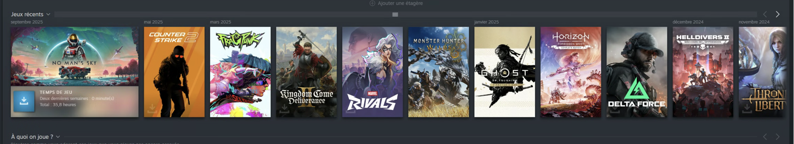
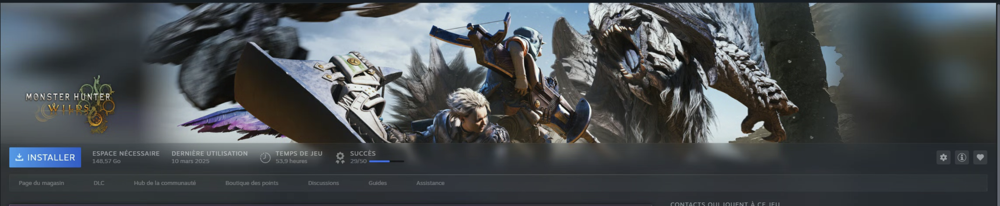
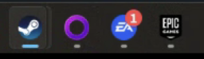
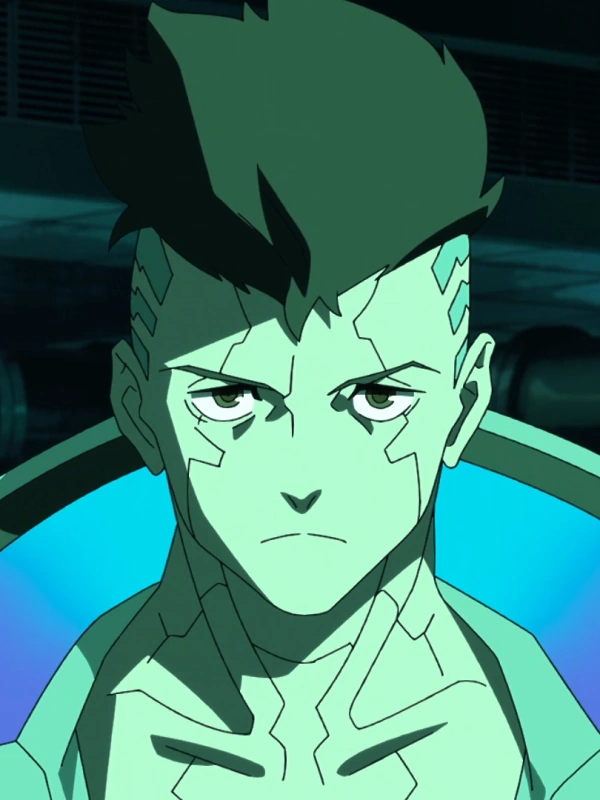
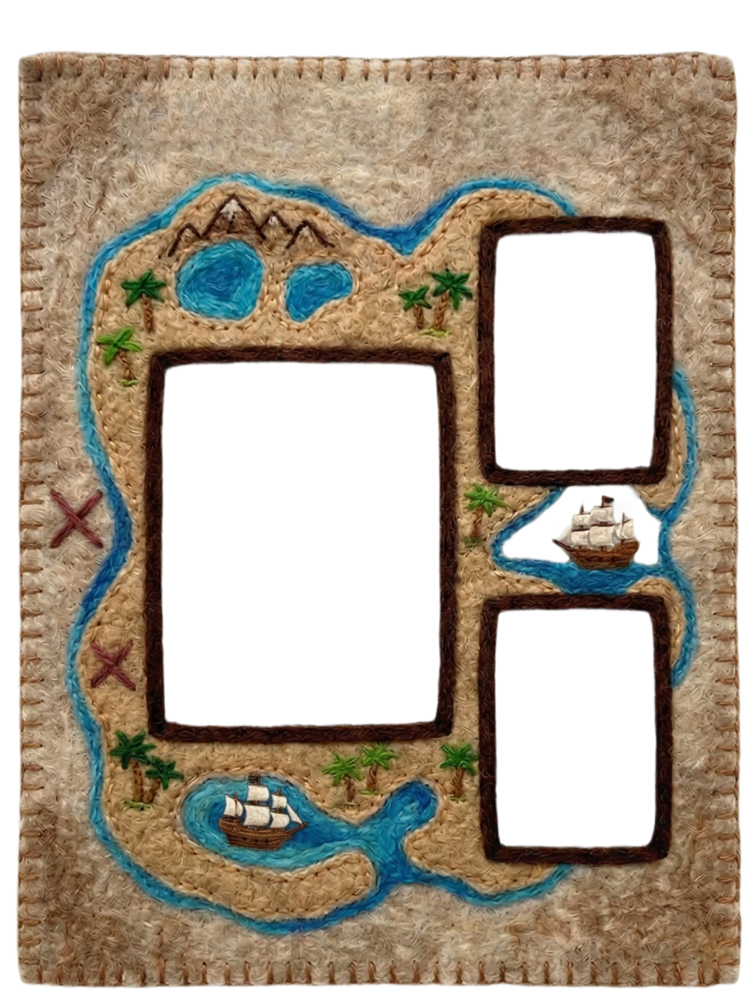

65 %
des gamers PC ont 3 launchers ou plus
Appuie sur ? ou Échap pour fermer

Jury blanc·Communication·CDA 2026
Jean-Baptiste Renart
Confession d'un joueur



Samedi soir, j'ai 2 heures.
Je joue à quoi ?



Et je suis loin d'être seul
65 %
des gamers PC ont 3 launchers ou plus
80 %
de la bibliothèque Steam moyenne : jamais touchée
14 000+
jeux sortis chaque année. On en rate.
Steam ignore ta PS5. La PS5 ignore ta Switch.
Personne ne parle aux autres.
Notre proposition
Steam, Epic, GOG, PSN, Xbox, Switch — toutes tes bibliothèques au même endroit.
À faire, en cours, terminé, abandonné. Ton journal de progression.
Une timeline des sorties à venir, sur toutes les plateformes. Plus jamais une release manquée.
Une IA qui te dit à quoi jouer ce soir, selon tes habitudes et le temps que tu as.
Une équipe de deux
Design UI / UX · Frontend
Direction artistique, maquettes, intégration Vue / Nuxt.

Backend · Architecture
API Fastify, PostgreSQL, infrastructure, sécurité.
On bosse comme une équipe pro
L'environnement technique
Trois choix qu'on défend
Loreleï maîtrise Vue (enseigné chez ForEach). Nuxt 3 = Vue full-stack avec SSR et un écosystème mature. On code moins, on livre plus vite.
Écosystème JavaScript unifié avec le web : même langage, types et validations partagés. Expo simplifie le build et les permissions natives.
Données relationnelles (users, jeux, statuts, amis). Postgres garantit l'intégrité référentielle, les transactions ACID, et JSONB quand on a besoin de flexibilité ponctuelle.
Pris au sérieux dès le départ
Schéma BDD audité contre les 10 vulnérabilités web les plus critiques.
Suppression de compte = purge totale via cascades SQL. Droit à l'effacement automatique.
Argon2id pour les mots de passe (référence NIST 2026). JWT avec rotation et détection de vol.
Lint, typecheck, tests, audit auto. CodeQL + Dependabot. 32 vulnérabilités résolues.
À date
/docs23+ tests d'intégration verrouillent les comportements critiques.
La suite

Steam en premier (API publique), puis tous les autres. Nintendo en dernier — pas d'API officielle, c'est le boss final.
Des questions ?
Jean-Baptiste · CDA 2026